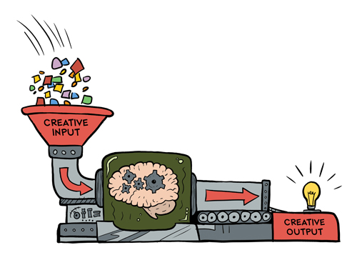
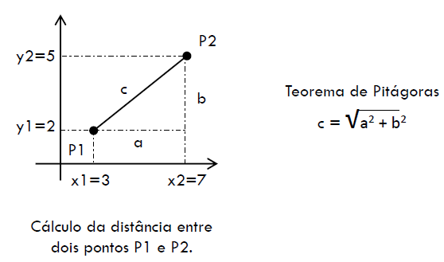

Exercícios Entrada e Saída

Created by Fernando Marques
Avaliação de Um Minuto
- Complicado pensar em código (...), acredito que terei problemas
Revisão
- DevC++
- Bibliotecas
- Variáveis int, float
- Atribuição
- Comando de saída
- Comando de Entrada
#include <stdio.h>
int main(){
int a = 0;
float x;
scanf("%f", &x);
a = 10;
printf("Valor de a: %d e valor de x %f",a,f);
}
Vamos aprender juntos!
- Crie um programa com main
- Escreva uma mensagem na tela!
- Declare e inicialize uma variável inteira!
- Escreva a variável na tela
- Declare e inicialize uma segunda variável
- Some as duas variáveis e salve na primeira
- Escreva a variável na tela
- Agora subtraia!
- Agora Multiplique
- Agora mude o tipo da variável para real
- Divida a primeira pela segunda e escreva na tela
- Leia um valor inteiro do usuário, some 2 e imprima na tela
- Leia um valor real do usuário, divida por 3 e imprima na tela
- Pergunte o sexo do usuário (M/F) e escreva na tela o valor lido
- Pergunte e leia a idade do usuário. Depois imprima uma mensagem com o valor
- Pergunte um número real, calcule seu coseno e imprima o resultado na tela
- Pergunte um número real, calcule a raiz quadrada e imprima o resultado na tela
- Pergunte dois números a e b, calcule ab e imprima o resultado na tela
Exercícios
- Dada as coordenadas de dois pontos no plano cartesiano, informa a distância entre eles
- 
- Dada uma distância percorrida (em quilômetros),bem como o total de combustível gasto(em
litros), informe o consumo médio do veículo emkm/l.
Exercícios
- Dadas as medidas de uma sala em metros, bem com o preço do metro quadrado de carpete, informe o custo total para forrar o piso da sala
- Faça um programa que leia o peso e altura de uma pessoa e retorna o IMC da mesma
- Preencher a enquete Avaliação de Um Minuto